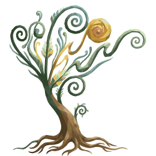

Three questions, once, before anything else. They decide the type — which owns the reveal, the name, the quote, the traits and the plant you are given. No account, no permissions, nothing to set up.
kizuku
you can only plant a tree.
Every option belongs to one type. Options run in the same order on all three questions — planner, optimiser, seeker — so the position of an answer never leaks the result.
Most-chosen type wins. A three-way split is broken by the third answer: the wireframe marks that question as the one that makes the result feel earned, so it carries the tie.
planner · planner · seeker → planner
planner · optimiser · seeker → seeker
The quiz is retakeable from you. It sets the type and nothing else — no data is cleared, and the garden keeps growing from where it was.
The quiz is retakeable from you. It sets the type and nothing else — no data is cleared, and the garden keeps growing from where it was.
The plant you are given

Two states, because two are drawn. Growth follows actions rather than days, so the seed opens on the first completed action and the plant stands from then on. A middle stage exists as artwork for the Optimizer alone — shipping three would leave the other two types with nothing to grow into.